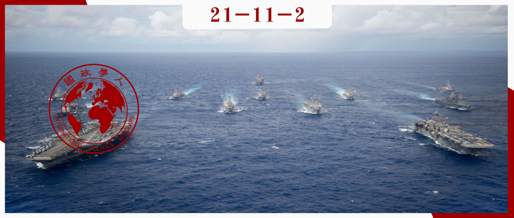
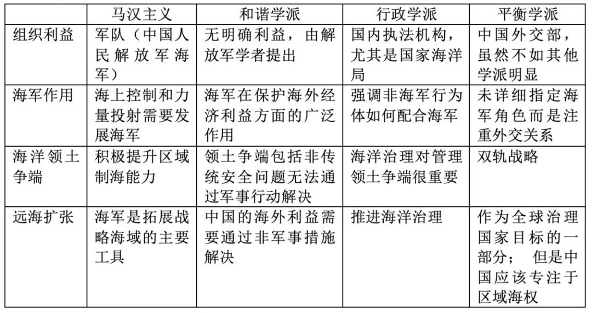

收录于合集 #《国际关系前沿》2021年第11期 18个

作品简介
作者： Edward Sing Yue Chan（陈星宇）, 悉尼大学国际关系博士。研究领域包括国际关系、中国外交政策、东亚安全、中国海权历史、海洋政治与治理。陈博士目前的研究项目主要围绕中国国内海洋领域参与者与灰色地带战略以及中西海洋安全思想异同。
编译： 张彦赪（国政学人编译员，悉尼大学国际关系专业）
来源： Edward Sing Yue Chan (2021): Beyond Mahanianism: the evolution of China’s policy discussion on sea power development, Asian Security , DOI: 10.1080/14799855.2021.1949583
归档： 《国际关系前沿》2021年第11期，总第38期。

内容摘要
中国的海权问题，特别是中国的海权将以何种形式发展，一直是学者和政策制定者之间不断讨论的话题。许多战略家认为，中国采取了马汉主义的方法，即通过控制主要商船航道和离岸基地来建设强大的海军力量。然而，这种假设是有问题的。自 2000 年代中期以来，许多中国学者和战略家就中国如何成为海洋强国提出了不同于传统的方案。本文将这些方法归纳整合为不同的学派，并研究它们是如何发展的。经过多年关于海权建设的政策辩论，中国学术界和政策实务人员（policy practitioner）一致认为，发展中国海权不仅仅是靠占主导地位的海军实力，还可以通过强调国内海洋治理和强制外交重要性的方式。这种方法超越了对马汉主义的理解。这些发现有助于揭示新的视角，从而理解中国海权的多维性，尤其是近年来在南海的“灰色地带战略”（gray- zone strategy）的运用。
文章导读
01
前言
中国对现有全球秩序日益增长的影响力一直引起学术界、政策制定者和媒体的关注。其中备受瞩目的话题之一是中国日益增长的海权问题，尤其在中国政府近年来采取更加强势的海洋战略来解决近海争端（offshore disputes）之后。“建设海洋强国”这一说法常常出现在中国的官方文件之中，已成为中国的一种政治宣示。
学者们倾向于将中国在海洋安全方面日益自信强硬的表现归因于对马汉思想的采用。他们认为，中国政府采取了更为“向海”（seaward）的海军战略以保护其大陆和近海利益，并同时向远海投射影响力。打造蓝水海军（blue- water navy）来增强国家实力的思路，与20世纪初阿尔弗雷德·塞耶·马汉（Alfred Thayer Mahan）的海权建设之道非常相似，即通过控制主要海上航道和海洋空间，在全球政治中实现主导。
然而，这种说法的不足之处在于：如果中国完全采纳马汉的想法，我们或将看到中国着力于发展蓝水海军，不断争取全球水域的制海权。而事实上，海洋军事力量投射并不是中国发展海洋力量的唯一途径。根据 2015 年国防白皮书，中国海军正在发展“远海护卫”的能力，但它并不声称寻求海洋主导。中国参与了多项国际海上安全行动，例如亚丁湾护航任务、联合国叙利亚化武护航任务、在印度洋的搜救马航失联飞机任务、以及马尔代夫的供水任务。虽然有质疑认为，中国在吉布提的海外海军基地与马汉谋求离岸基地以进行远洋作战的想法一致，但必须承认的是，中国海军的远海行动是合作性质的，且在很大程度上是遵守国际惯例的独立或联合海军行动。
那么，如果说中国超越了马汉的想法，什么方法可以解释目前中国的综合海洋战略？自 1990 年代后期以来，中国学者一直在讨论国家应如何发展海权以适应后冷战时代下不断变化的政治背景和安全环境。他们认为，中国和西方世界之间始终存在着差异，即中国从不试图通过投射海洋力量来实现“西式帝国主义”或“扩张主义”，而是引入其他方式来解决海洋政治议题。
本文从四个部分展开论述。首先，作者回顾八十年代以来中国马汉主义的发展，解释马汉思想的理据并探讨马汉主义在中国能够占据数十年的主流地位的原因。接着，作者重新整合关于中国海权发展的不同观点，以及他们如何在 2000 年代中期慢慢形成名为和谐学派（Harmonious School）的流派。本文将介绍该学派的主要方法，及其与马汉主义的区别。文章第三部分讨论自2013年中国领导人宣布“中国海权建设”以来，和谐学派的转变、转化和延伸。最后，文章将总结该研究结果的政策影响，以助于了解中国海权的综合发展。
02
中国式马汉主义概述
马汉主义是在19世纪后，以美国海军上将阿尔弗雷德·塞耶·马汉 (Alfred Thayer Mahan) 命名的。马汉被认为是近代研究海军和海权的第一人， 提出国家成为海上强国的三大支柱：海外贸易（控制公海的海道或战略线）、海军和商船队（发展海军能力）以及海军基地（获得远洋作战的离岸基地）。总之，马汉主义通常侧重于利用国家海军来谋求对海洋的显著支配地位，该观点认为，在此之后国家便可以追求其全球影响力。 这些想法已被许多当代海权国家所采纳，尤其是二战以来一直是全球唯一海上强国的美国。
自1980年代被称为“中国马汉”的刘华清司令提出结构性海军战略以来，马汉主义就一直在中国盛行。在其六年任期内，刘华清提出了基于马汉思想的“近海积极防御”战略。该战略为中国式马汉主义的思想体系奠基，对中国海洋安全战略的发展至关重要。有学者指出，中国的马汉主义思想体系可以定义为海军发展的进攻态势，以在东海（East China Sea）第一岛链和南海（South China Sea）建立一个缓冲区来获得制海能力，从而实现中国大陆的海岸线保护。该观点认为，自刘华清提出中国的海军战略后，中国本质上意识到了其在沿海防卫的脆弱性和对海洋施加管控的需求，进而转向了更为“向海”的海洋战略。
中国式马汉主义不仅是一个关于国家如何转向海洋的战略思想，也是一套支持中国通过主要海上航道的海军优势获得制海权的政策建议。因此，中国式马汉主义主要得到与人民解放军（PLA）有关的军方或相关学者的支持。 他们称自己是刘华清思想的继承者，而非马汉的支持者，因为马汉主义在中国经常被贴上西式帝国主义或扩张主义的标签。尽管中国的安全和政治环境偶尔会发生变化，但这一派的思想在过去的四十年里一直保持着类同。
首先，中国式马汉学派的支持者一贯坚持中国需要一支强大的海军来保护其极为不利的地缘战略地位，如中国海岸线太宽且领海狭窄。此外，中国不像其他历史上的海洋大国那样可以直接进入公海；而另一方面，中国近海的东海和南海又是21世纪的主要海上通道。其次，中国式马汉主义认为，中国政府不应疑虑在近海（包括东海和南海）建立中国的海洋地位合法性。他们坚称中国的政策“太温和了”。第三，这种马汉思想坚持中国海军应拓宽战略空间，以有效保护和扩大中国的海外利益。在刘华清的“近海积极防御”（near sea active defence）战略的基础上，中国式马汉主义的支持者在突破岛链方面变得愈为激进。一些学者甚至提出，解放军海军还应该扩大其的航行能力，保护中国免受“第三岛链”的影响——作为一条地缘政治线，该岛链东起夏威夷和新西兰，西至印度洋和东非。
这种视角呼应了上述马汉的海权三大支柱，即对海道的控制、海外海军基地以及海军和商船。中国式马汉学派提出，国家必须配备足够的海军力量和近海基地，以保护在印度洋航行的中国商船。这也解释了为何中国马汉学派的支持者特别主张建造航母，因为它可以为中国海军提供在公海上航行的平台。该学派也支持中国海军更多地参与非洲和中东的海洋事务，例如该流派对“一带一路”倡议表以支持，因为这可以让中国主动保护其海外利益，特别是在能源安全方面。
03
和谐学派：超越海军主导
尽管马汉主义在中国几十年里一直影响深远，但它并不是海权建设的唯一思想体系。自 1990 年代以来，一些学者为海上安全提供了替代性的、不那么以海军为中心的政策建议。 他们坚持认为，中国的海上安全战略不应单以海军发展为重点，还应考虑中国与南海周边国家的外交关系及其在该地区的经济发展。他们审慎于将海军发展视为海洋安全战略的首要任务的观念，因为这可能会影响到中国在海洋中的其他利益，特别是海洋经济开发。
2000 年代中期以来，广泛出现了有关海上安全的政策讨论，其中一个驱动因素是中国政府在国际社会中宣扬了中国对多种安全问题的责任。 中国不再将领土完整和军事现代化等传统安全作为首要的安全目标，而是认为负责任的崛起大国需要解决其他非传统安全问题，例如环境、能源和资源安全等，这些通常被称为“新世纪的历史使命”。 而在这样的政治背景下，中国式马汉主义似乎是一种自相矛盾的思想体系，因为它旨在获得海军优势，而非在国际政治中进行合作。与传统马汉学派不同，中国式马汉主义的核心论点是推动广泛的海洋治理议程，并建议中国应该如何发展海军能力之外的海权。 这一流派被称为和谐学派，因为该学派的支持者专注于通过非军事政策管理海事问题，从而与中国政府“和平发展”的政治目标相一致。
和谐学派由三个主要论点组成。首先，他们认为中国存在亟需解决的海上安全问题。经过1990 年代的政策讨论，他们认为中国的海上安全不应仅限于领海和专属经济区（Exclusive Economic Zone，EEZ）；它还应包括经过公海和开发海洋资源的权利。其次，和谐学派认为，中国的海洋利益需要通过外交力量、经济力量和执法力量等非军事手段来解决。他们强调了两项非军事的政策选择：加强海事立法和改革相关的执法机构。第三，和谐学派强调中国人民解放军海军（PLAN）在海上安全中不断变化的角色。他们坚持认为，由于海军是和平年代唯一可以越过领海航行的军事部队，其不仅要维护近海的领土完整，还要注重保护海外经济利益。
和谐学派的出现表明，中国发展海权可以在海军建设以外的不同政策领域实现多重目标。但是，由于缺乏组织利益这一要素，和谐学派的做法相对来说是理论性的，且仅在解放军学者和海事专家之间的讨论。然而在2013年中国领导人宣布“建设海洋强国”后，愈多的国内相关方相继参与讨论，并就国家如何展现其海洋力量或解决海上安全问题提出了倡议。 于是，和谐学派分化为如下两个阵营，每个阵营都有不同的战略重点和组织利益。
04
行政学派：关注海洋治理
一些政策实务人员强调将加强海洋治理作为保护中国海洋权益的战略，并注重国内执法和政策规划，他们可以称之为行政学派。行政学派认为，只有强大的行政机构才能以充分且和平的方式来维护和扩大中国海权。与和谐学派相同，行政学派认为中国在海洋政治上的优势在于其强大的海洋经济而非海军实力。
行政学派为加强中国海洋治理提出了些许政策建议。首先，行政学派的支持者坚持“依法治海”，他们建议政府在国际法的基础上制定一部中国海商法。这将增加中国在领海和专属经济区（包括有争议的领土）的合法性和对其的管辖权。其次，行政学派建议中国政府应提高国内执法机构的能力，以确保中国在争议水域的海洋权益。已提出的一项政策建议是黄岩岛模式（Scarborough Shoal Model）。这种模式表明，中国不应被动地采用1980年代由邓小平提出的“搁置争议、共同开发”的思想。行政学派认为，政府需要更积极地实施国内政策，例如定期巡逻和执法行动，以申明主权 。在西方文献中，这通常被描述为灰色地带行动（gray-zone operations），因为中国经常使用非海军行为体在有争议海域内与军队进行协调。 然而，行政学派的倡导者则辩护道，这些政策是中国使用非军事行动手段管理自己领土的权利。
第三，行政学派试图将海洋治理方面的利益延伸到远海。支持者认为，中国需要强大的国内行政机构，以参与区域或国际海洋合作。“一带一路”倡议推动了这一点，因为该倡议的落地需要一个强大的行政机构来协助协调资源，以及规划区域和国际合作战略。换言之，这种思想流派将海事安全扩展到海事治理。
05
平衡学派：作为权力平衡的海洋安全
国际关系学者也参与到了有关中国海上安全的政策讨论。他们的主要研究兴趣集中在中国与其他国家的外交关系上。他们将中国海权建设视为东亚均势的地缘政治战略；因此，这群学者可以被认定为支持平衡学派。然而，平衡学派并没有把重点放在海洋治理上，而是专注于海洋政策的顶层战略设计。 具体而言，该学派的倡导者关注国家如何将军事和外交力量作为“双轨”战略来追求，以充分和平地保护和扩大中国（尤其是在东亚）的海权。
平衡学派的政策建议包括三个方面。首先，中国海上安全战略的最终目标应该是管理好与美国的关系。平衡学派将海上安全视为中国外交政策的一部分。因此，其海上安全战略也应与中美构建新型大国关系的战略方针相契合。该学派认为中国是一个区域性的海洋强国，因此有能力通过回应美国在南海地区的活动、发展与东南亚国家的外交关系、实现区域海洋事务的主导地位，从而最小化美国对该区域事务的参与。
其次，平衡学派认为，中国需要主动与东盟（ASEAN）国家建立更紧密的外交关系，以平衡美国的力量。平衡学派提出了解决离岸纠纷的“双轨”策略，展开中国与争端国家进行双边谈判，同时在与争端无关的议程上与东盟合作。其原因在于，作为一个主要大国，中国需要在东亚事务拥有更多的主导话语权。而增加军事或统治权力只会对其他国家产生威慑，但利用外交则更有利于关系构建。事实上，外交部确实正式承认“双轨”战略。外交部部长王毅甚至表示，“双轨”策略是解决南海争端“最务实、最有效的途径”。
第三，平衡学派的支持者建议中国应重点构建区域性海权；他们没有扩大中国在远海影响力的愿望。大多数国际关系学者认为，从地缘政治的角度来看，由于岛链的地理限制，中国不可能成为全球海洋大国。因此，中国应专注于获取公海资源并与沿岸国家保持良好关系，以此作为全球治理的国家目标之一。
总而言之，平衡学派的思想体系与处理中国在近海与美国和东南亚国家外交关系以及在远海的外交关系的安全困境有关，并同时强调中国对国际海洋事务的参与。
05
结语
本文在政策辩论中总结了有关中国海权演变的四种思想流派：从马汉主义到和谐学派的出现，以及行政学派和平衡学派之间的分歧（其政策建议见表1）。
表1 各学派政策建议

中国目前已经超越了马汉主义，以多种方式来投射其海上力量。学者和政策实务人员不能只关注中国海军的实力与运作，还应研究引入国内海事相关政策的激励措施，如巡逻、海上民兵、乃至渔业和旅游等。
各种流派的萌生不仅扩大了中国的综合海权，也增加了各个海事参与者之间的合作与互动。 值得注意的是，以海军为主导的思想体系，即马汉主义对中国海权的重要影响力并不因新学派的涌现而减损。 作为案例研究，关于中国海权发展的进一步政策讨论应与学术界不断变化的海上安全定义相结合。作为21世纪崛起的海洋强国，中国有意发展其在区域和全球的海洋影响力，因此中国在海洋的权力投射也应该加以研究。尤其是中国长期以来一直追求强调海军、国内海事机构、甚至平民之间的协调政策，比如灰色地带运作。在未来的研究中，我们应该着眼于中国对海权的理解将会如何对当代海上安全概念化产生新的影响。
译者评述
本文对中国海权发展的政策流派进行了综述，从组织利益、海军的作用、对海洋领土争端的处理以及对远海扩张的态度等四个要素出发，归纳总结出了四个流派，即马汉主义、和谐学派、行政学派和平衡学派。该研究提出，在近四十年来的国际风云变幻中，海洋实力的强大已经不仅仅体现在海军上，更是密切涉及政治、安全问题、外交政策、经济、科技、法律和社会。基于这样的时空背景，本文在对中国海权发展的不同观念加以梳理后指出，中国的海权发展已经超越了传统的马汉主义，即超越了对海军主导地位的发展，着眼于国内执法机构、立法、与其他国家的外交关系、经贸合作等多个领域。作者在结语中也强调，对马汉主义的超越不代表对海军主导地位的忽视，在中国的海权发展过程中中国人民解放军海军仍然占据重要地位，尤其是在运用自身资源技术以提供专业性指导层面。
本文兼具理论价值和现实意义。理论层面上，作者提出西方学界一贯认为中国的海权发展仍然以马汉主义为指导；有趣的是，中国学界则不以为然：中国学者则对中国自身海权发展另有看法，认为中国正在开辟一条发展海洋权力的新道路。通过作者对中国海权发展政策的不同观点的归纳整理以及详实的依据支撑，作者认为中国海权发展的新超越的观点，为西方学界理解中国海权发展提供了新的线索。从现实意义而言，该研究对中国的海权发展政策提供一定参考价值。尤其是考虑到在近期美方持续炒热的“印太”概念的背景下：例如美日印澳四国集团重获新生且反复强调维护“自由开放的印度- 太平洋”的宗旨、澳英美（AUKUS）核潜艇协议的落成、以及西方政客媒体不断炒作台海危机等一系列事件中，中方政策上应该如何回应？文章中的四大流派在针对不同领域的回应上都提供了多维的见解。诚如孙子所言，上兵伐谋，其次伐交，其次伐兵。中国要如何巩固国家的海洋权力、海事权利？如何处理好和东盟各国、太平洋岛国间的外交、经贸关系？这些疑难问题的解决都需要超越海军的综合实力和政治智慧为支撑。
词汇整理
蓝水海军 Blue-Water Navy
灰色地带战略 Gray-Zone Strategy
马汉主义 Mahanianism
政策实务人员 Policy practitioner
国家海洋局 State Oceanic Administration (SOA)
责编 | 杨佳霖 曾庆鸣
排版 | 顾金源 方引弓
文章观点不代表本平台观点，本平台评译分享的文章均出于专业学习之用, 不以任何盈利为目的，内容主要呈现对原文的介绍，原文内容请通过各高校购买的数据库自行下载。

国政学人
支持学术公益与知识传播
微信扫一扫赞赏作者 __赞赏
已喜欢，对作者说句悄悄话
取消 __
发送给作者
发送
最多40字，当前共字
上一页 1/3 下一页
长按二维码向我转账
支持学术公益与知识传播
受苹果公司新规定影响，微信 iOS 版的赞赏功能被关闭，可通过二维码转账支持公众号。